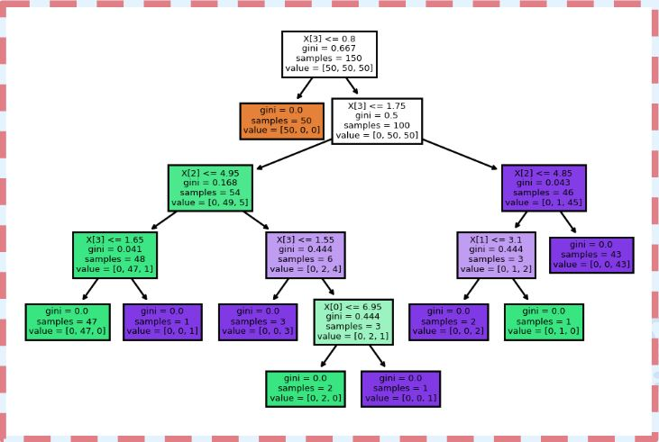
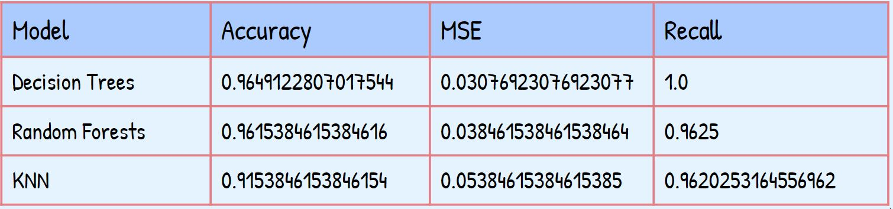

Visualizations
Graphs
Histogram Grid of Factors in Diabetes
This Histogram shows how many of each feature are included in either positive or negative class. The two different classes are shown as “yes” or “no”.
Bar Chart Showing Correlation
This Bar Chart shows the correlation of each symptom to the class. A high correlation will help lead to accurate results in our machine learning but if the correlation is low it could affect the results to be false.
Heatmap Correlation of Factors in Diabetes
Another graph we used to show our data was a heatmap. This heatmap shows how each feature affects the other. The most important one is class. The class is the outcome of our machine learning. It can either show positive or negative for diabetes. The class is compared with the 16 other features to see which symptoms we want to use in our Machine Learning Models
Pie Chart Correlation of Factors in Diabetes
Models
Machine Learning Confusion Matrices
Decision Trees
Decision Trees are a non-parametric supervised learning method used for classification and regression. The model can predict the value of a target variable by learning simple rules. The more data, the more complex the decision rules and the fitter the model.

The best parameters for Decision Trees were:
Criterion : gini
Splitter : best
Criterion is The function to measure the quality of a split. Splitter is the strategy used to choose the split at each node.
Decision Tree Results:
Recall score of approximately 1.0
Accuracy of 0.9649122807017544
MSE of 0.03076923076923077
Random Forest Classifier
Our second best model, Random forest uses forest classifiers that have to be fitted with two arrays: a sparse or dense array X of shape, and an array Y of shape.

max_features : sqrt
n_estimators : 10
Max Features is The number of features to consider when looking for the best split. n_estimators is The number of trees in the forest.
Random Forest Results:
Accuracy → 0.9615384615384616
MSE → 0.038461538461538464
Recall → 0.9625
K Nearest Neighbor
Our third best model, KNN is an algorithm that can be used to solve both classification and regression problems. It can calculate the distance between the given point and the other points. It then sorts all the points by distance in increasing order. For classification, which is what our project is using, the point is classified by a vote of its neighbors and then assigned to the class most common among its k nearest neighbors. The K value controls balance between the values from over fitting to under fitting.

{kind=link}
The parameters used for KNN were:
'n_neighbors':[3,5,7]
'weights':('uniform', 'distance')
'algorithm':('auto', 'ball_tree')
The best parameters for KNN were:
'algorithm': 'auto'
'n_neighbors': 3
'weights': 'distance'
KNN Results:
KNN
Accuracy → 0.9153846153846154
MSE → 0.05384615384615385
Recall → 0.9620253164556962
Conclusion

Making this model has come with many ups and downs, but as a team we have been able to persevere and make our product to the best of our ability. While creating the product at hand, we have encountered many challenges, but together, we have surpassed all our expectations and created a diabetes detector with as much accuracy as possible. During the process of making the product, we have gained much knowledge about not only the process of creating a product to put on a website, but also about symptoms of diabetes. As a group, we have put so much effort into making the product as accurate as possible, so it can help people save money and time when visiting doctors.
The Electric Pythons
AI Camp Members

Zachary Evan Shiff
Data Scientist

Naomi Kimora Castang
Data Scientist
Sophia Lee
Data Scientist
Joshua Jesiah
AI Architect
"These days elementary school students learn English and coding at school. Tommorow's elementary school student will AI. AI comes before English and coding. This is because Artificial Intelligence is the language and tool of the future." - Enamul Haque